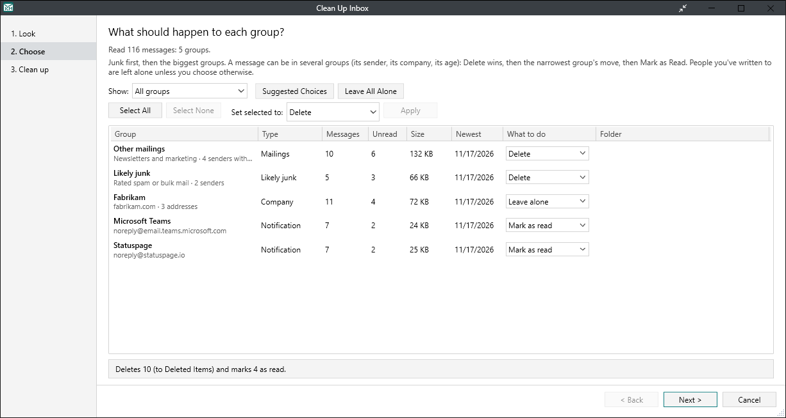
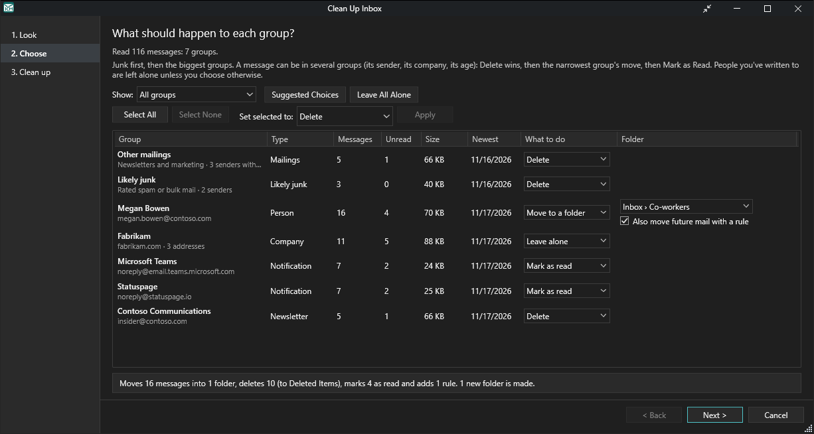
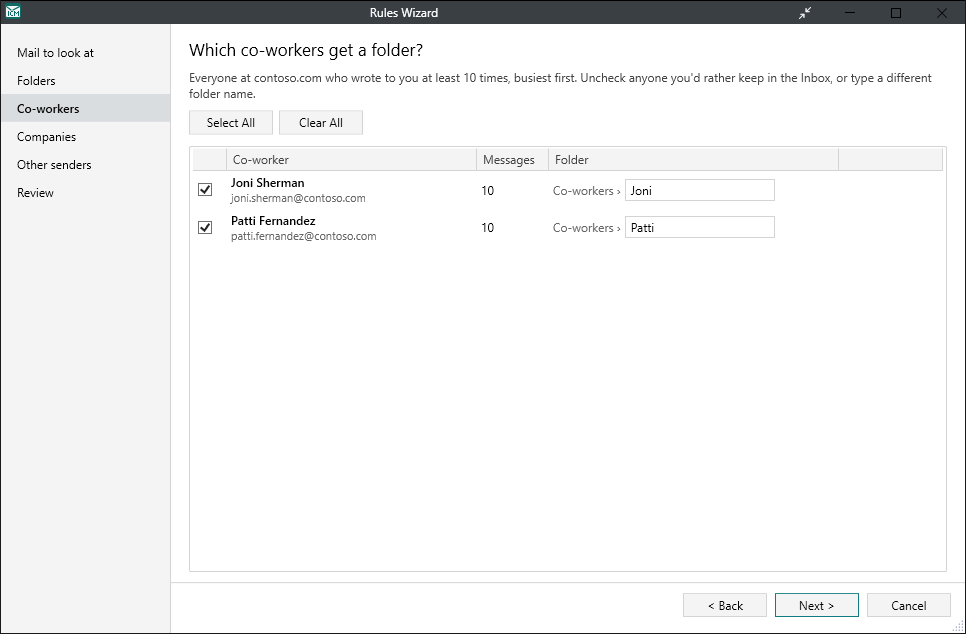
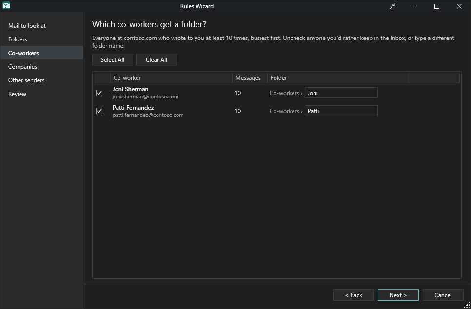

For mailboxes with 20+ years of mail: sort what you keep into folders, clear out what you never needed, and do it across tens of thousands of messages at a time. The easiest way is to let an AI agent such as Claude do it for you, across your whole account. You can also do it yourself with the tools below, one folder at a time. How to use them: Clean up your whole account with an AI agent and Cleaning up mail.
- Let AI clean up for you: connect Claude in one click (File → Options → Advanced → AI agents → Connect Claude Code) and describe the mailbox you want in your own words, for example “a short Inbox with only real people; everything else filed by company.” It looks at your whole account at once and proposes the folders, rules and moves, each with its reason:
- It spots what one folder at a time misses: three folders holding the same company’s mail, a rule filing into a folder you renamed, an Inbox half full of status alerts.
- Nothing changes until you check what you want and click Apply, and one Undo puts it all back. It can never send mail.
- Clean Up My Inbox (Home → Clean Up My Inbox, or right-click any folder → Clean Up → Sort Through This Folder): reads every message in the folder once, with progress and Stop, then lists its mail in groups, junk first, then biggest first.




- The groups:
- Likely junk: mail Microsoft 365 rated spam or bulk.
- Newsletters and marketing: recognized from their unsubscribe link and from how marketing addresses look. Small senders are gathered into one Other mailings group.
- Mail you never act on: people outside your organization you’ve never written to, replied to, forwarded or flagged. It works even if you mark everything read.
- Co-workers: filed into Co-workers › Name, as the Rules Wizard files them.
- Each company, all of its addresses together.
- Large messages, and mail older than 1, 2 or 5 years.
- Suggestions you can change:
- Delete what nobody keeps, file co-workers, mark notifications read, and leave alone anyone you’ve written to.
- For each group, choose Move, Archive, Delete, Mark as Read or Leave Alone, with sizes shown so you can see what takes the space.
- Many groups at once: show one kind (for example, Newsletters), Select All, and Set Selected To one action. Ctrl+click and Shift+click pick groups one by one.
- Folders where you want them: pick any folder, or right-click one to make a new folder inside it. Moves can add a rule so future mail goes there too, but not one you already have.
- Safe to run:
- A summary before anything changes, then the work in small batches, with Stop.
- One Undo puts every message back where it was, and removes the rules and folders the run made.
- Deleted mail goes to Deleted Items, never straight to permanent deletion.
- Rules for years of mail:
- The Rules Wizard and Organize Mail into Folders make a folder and rule for every co-worker and company at once, and file the mail you already have.
- Run Rules Now works on any folder, with progress and Stop.
- A new rule on a folder of thousands of messages asks before running, and offers Clean Up instead.




- Your history on your PC: keep years of mail from every folder on your PC to read and search offline. File → Info shows how much is kept, beside your mailbox’s size and limit.
Missing something you used in Outlook? Choose Help → Suggest a Feature in the app. Found a bug? Choose Help → Report a Bug.